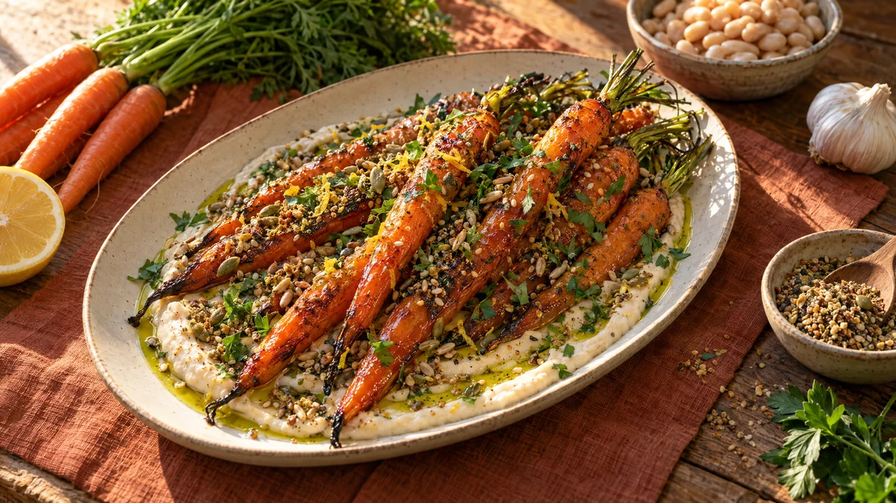

RESTFEST · RECEPTTillbehör · Förrätt · Huvudrätt
Glaserade morötter på vit bönkräm med frödukkah
Morötterna längst in i grönsakslådan och en burk vita bönor blir en rätt som ser ut att komma från en bistro. Sirapsglaserade morötter med karamelliserade kanter vilar på en sidenlen bönkräm med citron och vitlök. Över allt strös rostade frön med spiskummin och koriander som knastrar i varje tugga.
- Förberedelse
- 15 min
- Tillagning
- 30 min
- Portioner
- 4 som tillbehör eller förrätt, 2 som huvudrätt
- Nivå
- Nybörjare
 Det här behöver du
Det här behöver du
JÄMFÖRT MED DIN KYL
Tryck på + vid det du behöver köpa.
Morötter
Bönkräm
Frödukkah
Till servering
Gör så här
- Sätt ugnen på 225 grader. Skrubba eller skala morötterna. Dela tjocka morötter på längden så att alla blir ungefär lika tjocka. Spara gärna 2–3 cm av blasten.
- Lägg morötterna på en plåt med bakplåtspapper. Vänd dem i olja, spiskummin och salt. Rosta i mitten av ugnen i 20 minuter.
- Ringla sirapen över morötterna och vänd runt. Rosta 8–10 minuter till, tills de är mjuka och kanterna har karamelliserats. Pressa över citronsaften.
- Gör bönkrämen medan morötterna rostas. Mixa bönor, vitlök, citronsaft, tahini och salt med en stavmixer eller i en matberedare. Tillsätt olja och vatten lite i taget och mixa i minst 2 minuter, tills krämen är helt slät och fluffig. Smaka av med salt och citron.
- Rosta solros-, pumpa- och sesamfröna i en torr stekpanna på medelvärme i 3–4 minuter. Rör hela tiden tills de doftar och sesamfröna fått färg. Tillsätt kryddorna de sista 30 sekunderna.
- Häll upp fröna på en skärbräda och hacka dem grovt eller krossa dem lätt i en mortel. Rör ner salt och chiliflakes.
- Bred ut bönkrämen på ett stort fat med baksidan av en sked, i en enda svepande rörelse så att det bildas en grop. Lägg morötterna ovanpå, kors och tvärs.
Dekoration och servering
- Ringla olivolja i bönkrämens gropar så att den glänser.
- Strö dukkah generöst över morötterna och krämen, och avsluta med persilja och citronskal.
- Lämna blasten på några morötter, det ger ett vackert grönt avslut.
- Använd ljusa fat i lera eller sten som kontrast mot det orange.
- Servera ljummet med surdegsbröd som huvudrätt, eller som tillbehör till kyckling eller lax.
Mått och ugnstemperaturer
Måtten är svenska (dl, msk, tsk, krm). Ugnstemperaturerna gäller vanlig ugn med över- och undervärme; med varmluft, sänk med 20 grader.